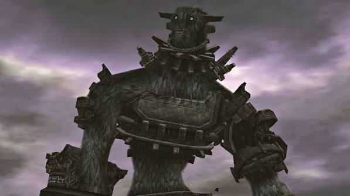

O legado de Shadow of the Colossus
Shadow of the Colossus marcou muitos jogadores por transformar cada confronto em uma experiência de exploração, observação e estratégia.
A Terra Proibida é um lugar silencioso, cheio de ruínas e paisagens abertas. O cenário conta parte da história sem precisar explicar tudo em palavras.
Cada colosso funciona como um quebra-cabeça em movimento. Observar como ele se comporta costuma ser a chave para avançar.
Shadow of the Colossus combina exploração, mistério e batalhas contra colossos em um mundo antigo.